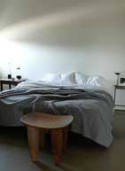
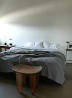

richard

In the master bedroom, the floors are bare and the windows are simple white blackout roller blinds. The king-size summer cover in Orkney natural linen is from Rough Linen.
My approach to interiors is the same as my approach to product design; simplicity, balance, proportion. I like space and calm, even in small rooms. I prefer interiors that have a relaxed feel, spaces that look cohesive but don’t look designed or ‘done’; that have a feeling of restraint and quiet. Environments that have a soul and reflect the owners' personality, objects that mean something, not bought to fill a gap. When someone asks me to design their home, the collaboration is what’s important. I like to find out how they live, what they need from their homes, what space and calm and simplicity mean to them.
For more information, go to Richard Ostell.
 
